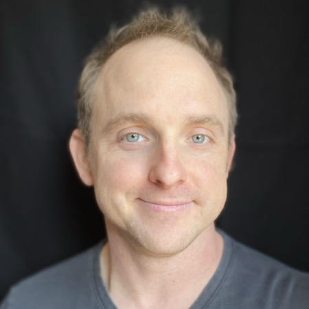

Explorer, Scientist, Educator, Husband, Father
Brisbane 🇦🇺 (0.5y) at sea 🌊⛴️🌊 (0.5y)
↗ ↗ |
Wisconsin (23y) --> Honolulu, HI (10y) --> Bay Area, CA (8y)
↘ |
Kampala 🇺🇬 (1m) ↙
deep-sea 🐟🌌🐙 (3x; 2650m)
* Lectures occasionally at Stanford on microbial genomics and comp bio
* Never rejected from college or grad school (IYKYK)
Wisconsin (23y) → Honolulu, HI (10y) → Bay Area, CA (8y)
Travels: Brisbane 🇦🇺, Kampala 🇺🇬, deep-sea 🌊 (3x)
Looking to meet? Schedule time on my calendar here.